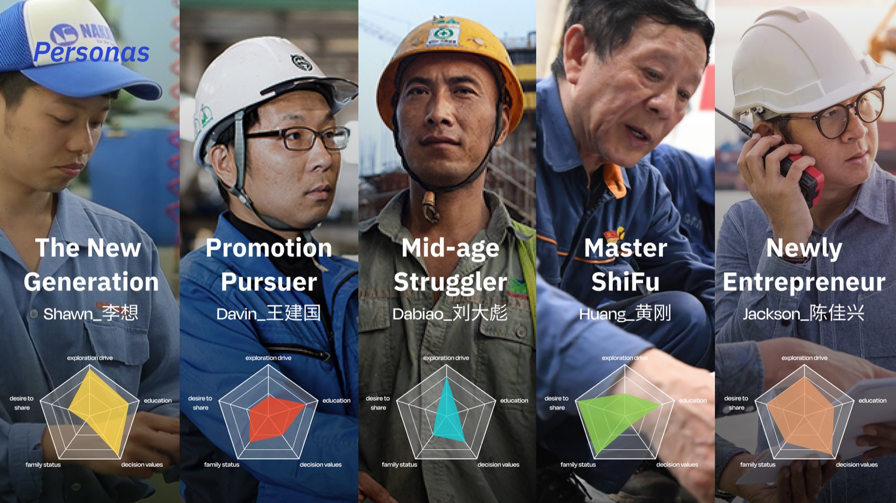
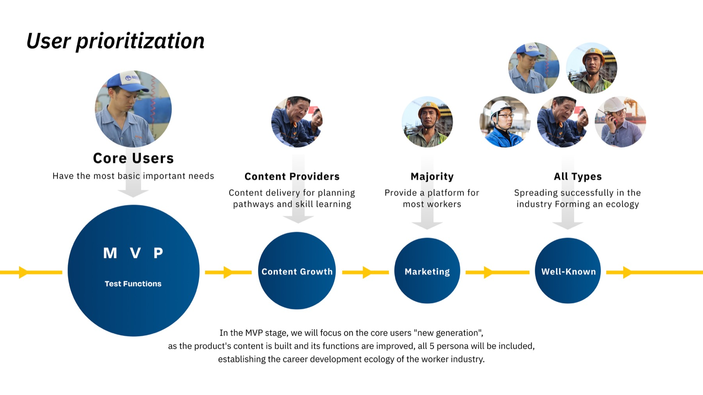
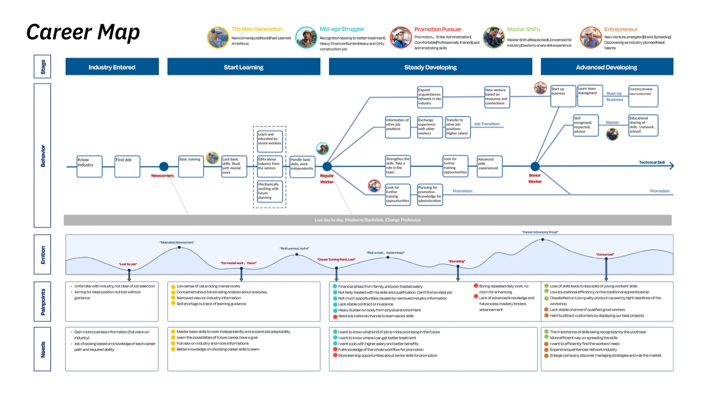
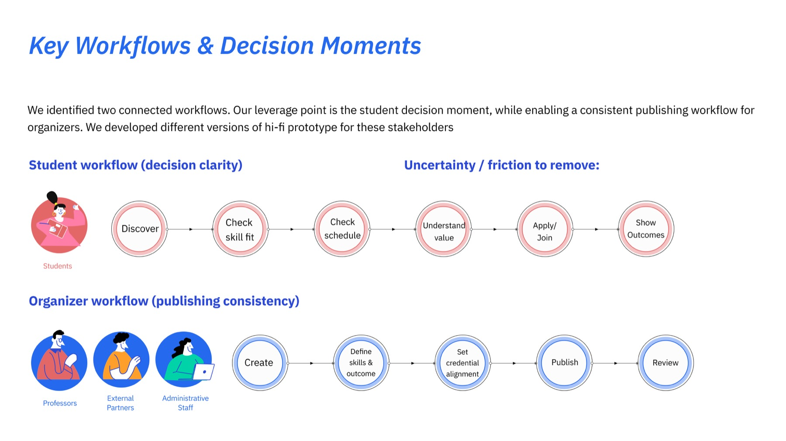
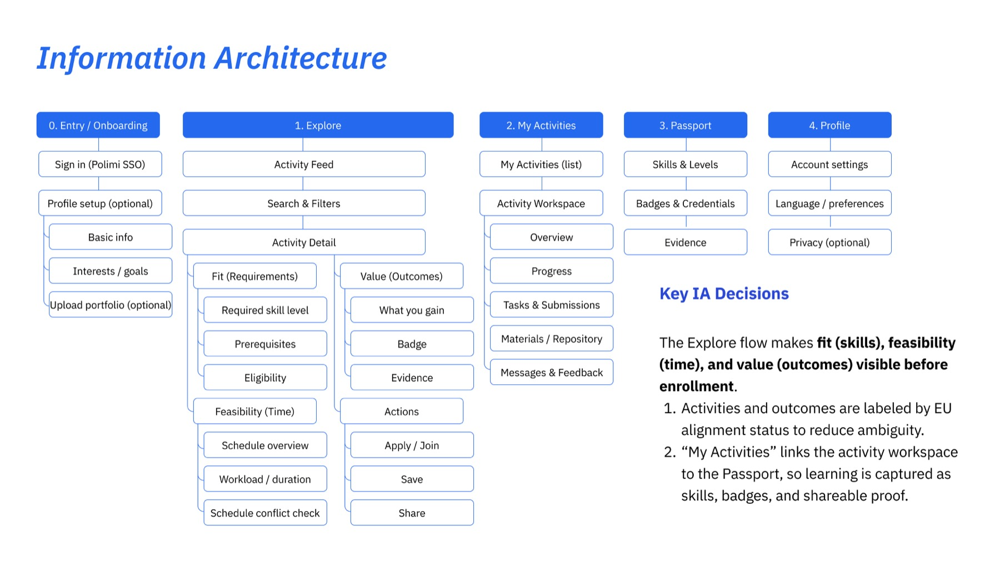
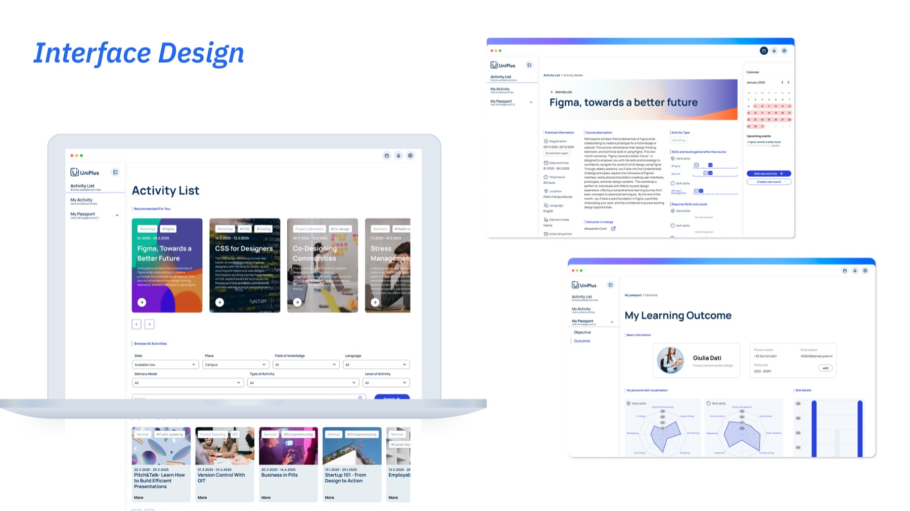

访谈揭示角色之间不同的目标与阻力。


Dossier thesis
Evidence matters when
it changes the structure.
这两个项目不以“做过多少研究方法”为重点。Promap 关注人的职业阶段如何改变产品方向；UniPlus 关注多角色、多模块的服务关系如何被整理成可理解的产品结构。
它们共同构成一条连续实践：观察差异、定义关系、做出结构判断，再用原型检查这套判断是否真的能被使用。
- Interviews
- 20+
- Personas
- 5
- Chapters
- 2
- Deployed validation
- 0
Supporting case 03 / Promap
同一个平台，
不是同一段职业旅程。
在 Bosch Power Tools 的实习研究中，注意力从统一功能列表转向不同职业阶段：一线工人、管理者与平台相关角色面对的目标、阻力和使用情境并不相同。


画像不再只是描述人，而是组织产品判断。
研究结论进入优先级与后续路线，而不是停在报告里。
不同职业阶段面对的目标、阻力和支持网络并不相同。
如果只按功能组织机会，就无法解释同一功能为何对不同阶段价值不同。
画像、旅程与机会点共同进入 MVP 范围和路线图讨论。
现有证据支持研究影响了产品判断；不支持采用率或业务增长结论。

Supporting case 04 / UniPlus
服务生态只有变成结构，
才能成为产品。
UniPlus 面对的不是一个单一页面问题，而是角色、凭证、生命周期与工作流之间的关系。关键判断是先定义模块边界和信息流，再讨论界面表现。


先看谁在何时需要什么，再划分功能。
信息架构承担服务关系，而不只是整理菜单。
界面让复杂后台关系对不同角色保持可理解。
学生、学校、合作方与平台运营者在不同阶段拥有不同任务和信息。
直接进入页面设计会隐藏权限、状态转换和跨角色依赖。
界面由服务生态和生命周期结构推导，而不是由功能清单拼装。
当前成果证明系统与 IA 推演能力，不证明真实组织采用或业务结果。

Retrospective
Keep the decisions.
Edit the school-process theatre.
What still represents my practice
从证据中识别差异、建立关系模型、做出信息与产品结构判断，这些能力仍然直接影响我今天的工作。
What I would change now
我会更早把关键假设做成轻量原型，并减少与判断无关的过程材料；下一轮验证应围绕结构是否真的帮助用户完成任务，而不是继续扩充研究文档。